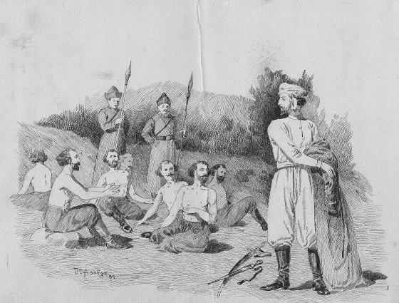

XIII საუკუნეში, როდესაც საქართველო მონღოლთა ბატონობის ქვეშ იყო, ქართველები ცდილობდნენ დამოუკიდებლობის შენარჩუნებას. ცოტნე დადიანმა შეთქმულებაში მიიღო მონაწილეობა, რომელიც მიზნად ისახავდა ქვეყნის გათავისუფლებას.
შეთქმულები მონღოლებმა დაატყვევეს და სასტიკი წამებისთვის გაწირეს. მათ მზეზე თაფლში ამოსვეს, რათა მწერებს დაეკბინათ. ცოტნე დადიანმა თავისუფალი ნებით გაწვა მათ გვერდით, რათა თავისი ერთგულება და სიმამაცე დაემტკიცებინა.
მონღოლები ცოტნეს საქციელით გაოცებულები დარჩნენ და ყველა ტყვე გაათავისუფლეს. ეს ისტორია დღემდე გვასწავლის ერთგულებისა და პატრიოტიზმის ფასს.
